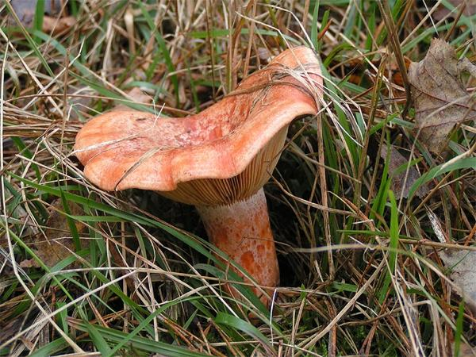
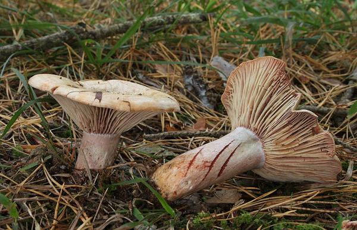

Comestible · bo per començar
Rovelló i pinetell
Lactarius sanguifluus · Lactarius deliciosus
On i quan
Sota pins, entre la pinassa i l'herba. Tardor fins a les primeres glaçades. És el bolet més probable a les pinedes de Riudecanyes.
Com reconèixer-lo
- Barret taronja de 5 a 12 cm, amb cercles concèntrics i el centre enfonsat.
- Làmines taronja que baixen una mica per la cama.
- Cama curta, buida per dins, sovint amb clotets.
- Prova decisiva: en trencar-lo surt una llet taronja pastanaga (pinetell) o vermell vinós (rovelló).
- Amb el temps i els cops es taca de verd. És normal.
No el confonguis amb
Fals rovelló (Lactarius chrysorrheus): creix sota alzines, és més pàl·lid i la llet és blanca i es torna groga en pocs segons.
Regla: Llet taronja o vinosa: endavant. Llet blanca o groga: fora del cistell.
Foto: autor no indicat, CC BY-SA 3.0 · Holger Krisp, CC BY 3.0 (Wikimedia Commons)